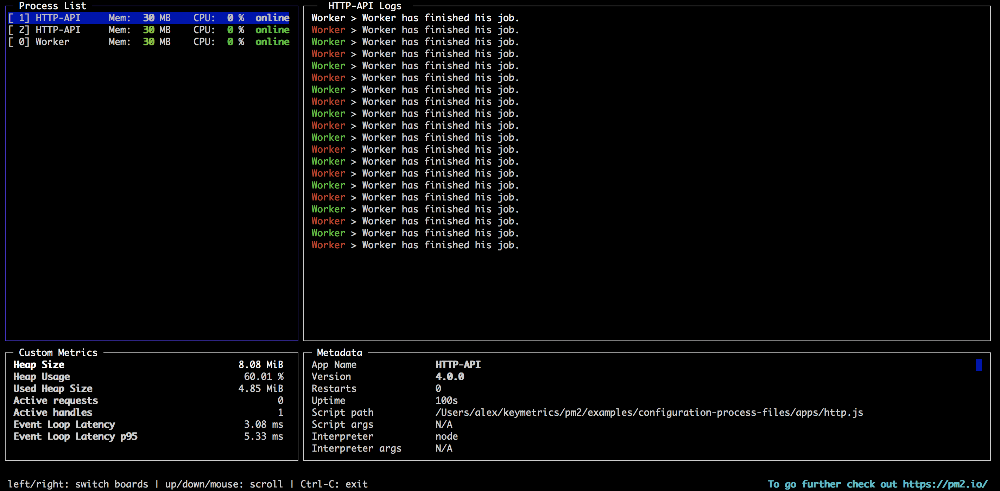
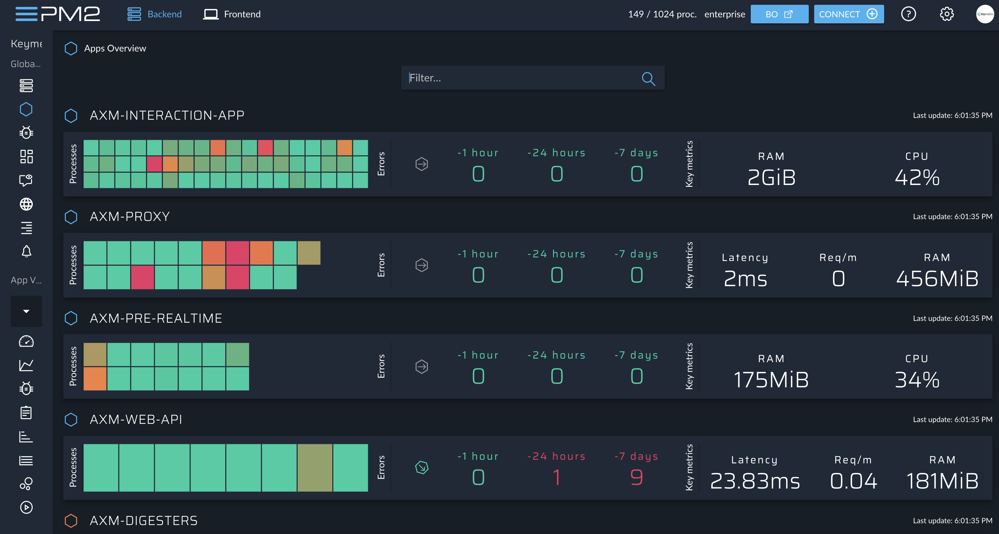
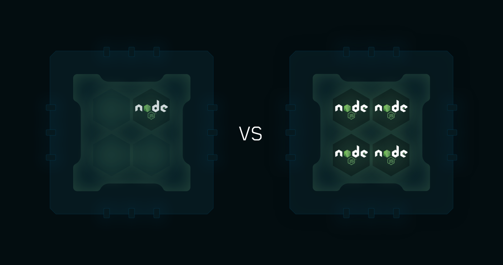
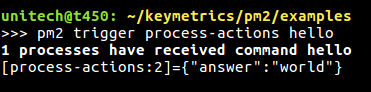
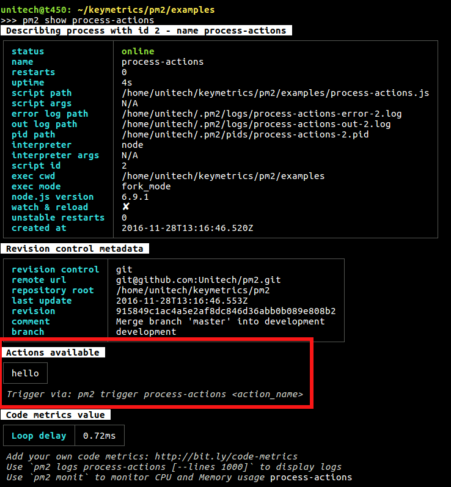
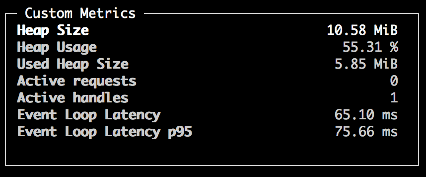
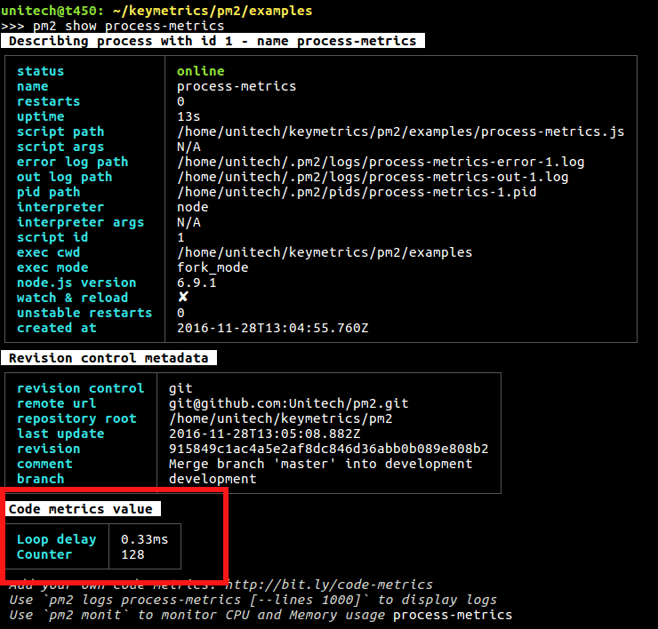

Bienvenue!
Bienvenue dans le Quick Start PM2!
PM2 est un gestionnaire de processus démon qui vous aidera à gérer et à maintenir votre application en ligne. La prise en main de PM2 est simple, elle est proposée sous la forme d'une CLI simple et intuitive, installable via NPM.
Installation
La dernière version PM2 est installable avec NPM ou Yarn:
$ npm install pm2@latest -g
# or
$ yarn global add pm2
Pour installer Node.js et NPM, vous pouvez utiliser NVM
Lancer une application
Le moyen le plus simple de démarrer, démoniser et surveiller votre application consiste à utiliser cette ligne de commande:
$ pm2 start app.js
Ou lancez toute autre application facilement:
$ pm2 start bashscript.sh
$ pm2 start python-app.py --watch
$ pm2 start binary-file -- --port 1520
Certaines options que vous pouvez transmettre à la CLI:
# Specify an app name
--name <app_name>
# Watch and Restart app when files change
--watch
# Set memory threshold for app reload
--max-memory-restart <200MB>
# Specify log file
--log <log_path>
# Pass extra arguments to the script
-- arg1 arg2 arg3
# Delay between automatic restarts
--restart-delay <delay in ms>
# Prefix logs with time
--time
# Do not auto restart app
--no-autorestart
# Specify cron for forced restart
--cron <cron_pattern>
# Attach to application log
--no-daemon
Comme vous pouvez le voir, de nombreuses options sont disponibles pour gérer votre application avec PM2. Vous les découvrirez en fonction de votre cas d'utilisation.
Gestion des processus
La gestion de l'état de l'application est simple, voici les commandes:
$ pm2 restart app_name
$ pm2 reload app_name
$ pm2 stop app_name
$ pm2 delete app_name
Au lieu de app_namevous pouvez passer:
alld'agir sur tous les processusidpour agir sur un identifiant de processus spécifique
Vérifier l'état, les journaux, les métriques
Maintenant que vous avez commencé cette application, vous pouvez vérifier son état, les journaux, les mesures et même obtenir le tableau de bord en ligne avec pm2.io .
Répertorier les applications gérées
Répertoriez l'état de toutes les applications gérées par PM2:
$ pm2 [list|ls|status]

Afficher les journaux
Pour afficher les journaux en temps réel:
$ pm2 logs
Pour creuser des journaux plus anciens:
$ pm2 logs --lines 200
Tableau de bord basé sur le terminal
Voici un tableau de bord en temps réel qui s'intègre directement dans votre terminal:
$ pm2 monit

pm2.io: Interface Web de surveillance et de diagnostic
Tableau de bord Web, serveurs croisés avec système de diagnostic:
$ pm2 plus

Mode cluster
Pour les applications Node.js, PM2 inclut un équilibreur de charge automatique qui partagera toutes les connexions HTTP [s] / Websocket / TCP / UDP entre chaque processus généré.
Pour démarrer une application en mode cluster:
$ pm2 start app.js -i max
En savoir plus sur le mode cluster ici .
Fichier d'écosystème
Vous pouvez également créer un fichier de configuration, appelé fichier d'écosystème, pour gérer plusieurs applications. Pour générer un fichier d'écosystème:
$ pm2 ecosystem
Cela générera un fichier écosystème.config.js:
module.exports = {
apps : [{
name: "app",
script: "./app.js",
env: {
NODE_ENV: "development",
},
env_production: {
NODE_ENV: "production",
}
}, {
name: 'worker',
script: 'worker.js'
}]
}
Et démarrez-le facilement:
$ pm2 start process.yml
En savoir plus sur la déclaration d'application ici .
Script de démarrage d'installation
Le redémarrage de PM2 avec les processus que vous gérez au démarrage / redémarrage du serveur est essentiel. Pour résoudre ce problème, exécutez simplement cette commande pour générer un script de démarrage actif:
$ pm2 startup
Et pour figer une liste de processus pour la réapparition automatique:
$ pm2 save
En savoir plus sur le générateur de script de démarrage ici .
Redémarrez l'application sur les modifications
C'est assez simple avec l' --watchoption:
$ cd /path/to/my/app
$ pm2 start env.js --watch --ignore-watch="node_modules"
Cela
surveillera et redémarrera l'application sur toute modification de
fichier à partir du répertoire actuel + tous les sous-dossiers et
ignorera toutes les modifications dans le dossier node_modules --ignore-watch="node_modules".
Vous pouvez ensuite utiliser pm2 logspour vérifier les journaux des applications redémarrées.
Mise à jour de PM2
Nous l'avons simplifié, il n'y a pas de changement de rupture entre les versions et la procédure est simple:
npm install pm2@latest -g
Ensuite, mettez à jour le PM2 en mémoire:
pm2 update
CheatSheet
Voici quelques commandes à connaître. Essayez-les simplement avec un exemple d'application ou avec votre application Web actuelle sur votre machine de développement:
# Fork mode
pm2 start app.js --name my-api # Name process
# Cluster mode
pm2 start app.js -i 0 # Will start maximum processes with LB depending on available CPUs
pm2 start app.js -i max # Same as above, but deprecated.
pm2 scale app +3 # Scales `app` up by 3 workers
pm2 scale app 2 # Scales `app` up or down to 2 workers total
# Listing
pm2 list # Display all processes status
pm2 jlist # Print process list in raw JSON
pm2 prettylist # Print process list in beautified JSON
pm2 describe 0 # Display all informations about a specific process
pm2 monit # Monitor all processes
# Logs
pm2 logs [--raw] # Display all processes logs in streaming
pm2 flush # Empty all log files
pm2 reloadLogs # Reload all logs
# Actions
pm2 stop all # Stop all processes
pm2 restart all # Restart all processes
pm2 reload all # Will 0s downtime reload (for NETWORKED apps)
pm2 stop 0 # Stop specific process id
pm2 restart 0 # Restart specific process id
pm2 delete 0 # Will remove process from pm2 list
pm2 delete all # Will remove all processes from pm2 list
# Misc
pm2 reset <process> # Reset meta data (restarted time...)
pm2 updatePM2 # Update in memory pm2
pm2 ping # Ensure pm2 daemon has been launched
pm2 sendSignal SIGUSR2 my-app # Send system signal to script
pm2 start app.js --no-daemon
pm2 start app.js --no-vizion
pm2 start app.js --no-autorestart
Et après?
Apprenez à déclarer toutes les options de comportement de votre application dans un fichier de configuration JSON .
Apprenez à effectuer un arrêt propre et un redémarrage pour augmenter la fiabilité.
Découvrez comment déployer et mettre à jour facilement des applications de production .
Surveillez vos applications de production avec Keymetrics .
Comment mettre à jour PM2
Installez la dernière version pm2:
npm install pm2@latest -g
Ensuite, mettez à jour le PM2 en mémoire:
pm2 update
Fichier d'écosystème
PM2 renforce votre flux de travail de gestion des processus. Il vous permet d'affiner le comportement, les options, les variables d'environnement, les fichiers journaux de chaque application via un fichier de processus. C'est particulièrement utile pour les applications basées sur des micro-services.
Les formats de configuration pris en charge sont Javascript, JSON et YAML.
Générer la configuration
Pour générer un exemple de fichier de processus, vous pouvez taper cette commande:
pm2 ecosystem
Cela générera un échantillon ecosystem.config.js:
module.exports = {
apps : [{
name: "app",
script: "./app.js",
env: {
NODE_ENV: "development",
},
env_production: {
NODE_ENV: "production",
}
}]
}
Une fois édité à votre convenance, vous pouvez démarrer / redémarrer / arrêter / supprimer ce fichier via CLI:
$ pm2 [start|restart|stop|delete] ecosystem.config.js
Consultez la section sur l'action avec la CLI sur écosystème.config.js pour en savoir plus.
Format Javascript
Vous pouvez déclarer plusieurs applications facilement et spécifier différentes options pour chacune d'elles:
module.exports = {
apps : [{
name : "worker",
script : "./worker.js",
watch : true,
env: {
"NODE_ENV": "development",
},
env_production : {
"NODE_ENV": "production"
}
},{
name : "api-app",
script : "./api.js",
instances : 4,
exec_mode : "cluster"
}]
}
Notez que l'utilisation d'un fichier de configuration Javascript nécessite de terminer le nom du fichier par .config.js
Format YAML
Vous pouvez également créer un fichier d'écosystème au format YAML. Exemple:
apps:
- script : ./api.js
name : 'api-app'
instances: 4
exec_mode: cluster
- script : ./worker.js
name : 'worker'
watch : true
env :
NODE_ENV: development
env_production:
NODE_ENV: production
CLI
Ensuite, vous pouvez exécuter et gérer vos processus facilement:
# Start all applications
pm2 start ecosystem.config.js
# Start only the app named worker-app
pm2 start ecosystem.config.js --only worker-app
# Stop all
pm2 stop ecosystem.config.js
# Restart all
pm2 start ecosystem.config.js
## Or
pm2 restart ecosystem.config.js
# Reload all
pm2 reload ecosystem.config.js
# Delete all
pm2 delete ecosystem.config.js
Agir sur un processus spécifique
Vous pouvez également agir sur une application particulière en utilisant son nom et l'option --only <app_name>:
pm2 start ecosystem.config.js --only api-app
pm2 restart ecosystem.config.js --only api-app
pm2 reload ecosystem.config.js --only api-app
pm2 delete ecosystem.config.js --only api-app
Changement d'environnements
Vous avez peut-être remarqué que vous pouvez déclarer des variables spécifiques à l'environnement avec l'attribut env_*(par exemple env_production, env_staging…). Ils peuvent être commutés facilement. Il vous suffit de spécifier le --env <environment_name>lorsque vous agissez sur la déclaration d'application.
Exemple:
# Inject what is declared in env_production
pm2 start process.json --env production
# Inject what is declared in env_staging
pm2 restart process.json --env staging
Attributs disponibles
Le comportement et la configuration de l'application peuvent être affinés avec les attributs suivants:
Général
| Champ | Type | Exemple | La description |
|---|---|---|---|
| Nom | (chaîne) | "My-api" | nom de l'application (par défaut, nom de fichier de script sans extension) |
| scénario | (chaîne) | "./Api/app.js" | chemin du script relatif au début de pm2 |
| cwd | (chaîne) | "/ Var / www /" | le répertoire à partir duquel votre application sera lancée |
| args | (chaîne) | «-A 13 -b 12» | chaîne contenant tous les arguments passés via CLI au script |
| interprète | (chaîne) | "/ Usr / bin / python" | chemin absolu de l'interpréteur (par défaut au nœud) |
| interpreter_args | (chaîne) | "-harmonie" | possibilité de passer à l'interprète |
| node_args | (chaîne) | alias de interpreter_args |
Fonctionnalités avancées
| Champ | Type | Exemple | La description |
|---|---|---|---|
| les instances | nombre | -1 | nombre d'instances d'application à lancer |
| exec_mode | chaîne | "grappe" | mode pour démarrer votre application, peut être «cluster» ou «fork», fork par défaut |
| regarder | booléen ou [] | vrai | activer la fonction de surveillance et de redémarrage, si un fichier change dans le dossier ou le sous-dossier, votre application sera rechargée |
| ignore_watch | liste | ["[\ / \\] \ ./", "node_modules"] | liste de regex pour ignorer certains noms de fichiers ou de dossiers par la fonction de surveillance |
| max_memory_restart | chaîne | «150 millions» | votre application sera redémarrée si elle dépasse la quantité de mémoire spécifiée. format convivial: il peut s'agir de «10M», «100K», «2G» et ainsi de suite… |
| env | objet | {"NODE_ENV": "développement", "ID": "42"} | variables d'env qui apparaîtront dans votre application |
| env_ |
objet | {"NODE_ENV": "production", "ID": "89"} | injecter |
| source_map_support | booléen | vrai | valeur par défaut true, [activer / désactiver le fichier de carte source] |
| instance_var | chaîne | "NODE_APP_INSTANCE" | voir la documentation |
Fichiers journaux
| Champ | Type | Exemple | La description |
|---|---|---|---|
| log_date_format | (chaîne) | "AAAA-MM-JJ HH: mm Z" | format de la date du journal (voir la section du journal) |
| error_file | (chaîne) | chemin du fichier d'erreur (par défaut à $ HOME / .pm2 / logs / XXXerr.log) | |
| out_file | (chaîne) | chemin du fichier de sortie (par défaut à $ HOME / .pm2 / logs / XXXout.log) | |
| combiner_logs | booléen | vrai | s'il est défini sur true, évitez de suffixer le fichier journaux avec l'ID de processus |
| merge_logs | booléen | vrai | alias pour combiner_logs |
| pid_file | (chaîne) | chemin du fichier pid (par défaut à $ HOME / .pm2 / pid / app-pm_id.pid) |
Contrôle du flux
| Champ | Type | Exemple | La description |
|---|---|---|---|
| min_uptime | (chaîne) | disponibilité minimale de l'application à considérer comme démarrée | |
| listen_timeout | nombre | 8 000 | temps en ms avant de forcer un rechargement si l'application n'écoute pas |
| kill_timeout | nombre | 1600 | temps en millisecondes avant d'envoyer un SIGKILL final |
| shutdown_with_message | booléen | faux | arrêter une application avec process.send ('shutdown') au lieu de process.kill (pid, SIGINT) |
| wait_ready | booléen | faux | Au lieu de recharger en attendant l'événement d'écoute, attendez process.send ('ready') |
| max_restarts | nombre | dix | nombre de redémarrages instables consécutifs (intervalle inférieur à 1 seconde ou temps personnalisé via min_uptime) avant que votre application ne soit considérée comme une erreur et cesse d'être redémarrée |
| restart_delay | nombre | 4000 | temps d'attente avant de redémarrer une application en panne (en millisecondes). la valeur par défaut est 0. |
| redémarrage automatique | booléen | faux | true par défaut. si false, PM2 ne redémarrera pas votre application si elle plante ou se termine paisiblement |
| cron_restart | chaîne | "dix * * *" | un motif cron pour redémarrer votre application. L'application doit être en cours d'exécution pour que la fonction cron fonctionne |
| vision | booléen | faux | true par défaut. si false, PM2 démarrera sans fonctionnalités de visualisation (métadonnées de contrôle de version) |
| post_update | liste | ["Npm install", "echo lancement de l'application"] | une liste de commandes qui seront exécutées après avoir effectué une opération Pull / Upgrade à partir du tableau de bord Keymetrics |
| Obliger | booléen | vrai | la valeur par défaut est false. si vrai, vous pouvez lancer le même script plusieurs fois, ce qui n'est généralement pas autorisé par PM2 |
Déploiement
| Nom de l'entrée | La description | Type | Défaut |
|---|---|---|---|
| clé | Chemin de clé SSH | Chaîne | $ HOME / .ssh |
| utilisateur | Utilisateur SSH | Chaîne | |
| hôte | Hôte SSH | [Chaîne] | |
| ssh_options | Options SSH sans indicateur de ligne de commande, voir 'man ssh' | String ou [String] | |
| réf | GIT à distance / branche | Chaîne | |
| repo | Télécommande GIT | Chaîne | |
| chemin | chemin dans le serveur | Chaîne | |
| pré-configuration | Commande de pré-configuration ou chemin vers un script sur votre machine locale | Chaîne | |
| post-installation | Commandes post-installation ou chemin vers un script sur la machine hôte | Chaîne | |
| pré-déploiement local | action de pré-déploiement | Chaîne | |
| post-déploiement | action post-déploiement | Chaîne |
Considérations
Toutes les options de ligne de commande passées lors de l'utilisation de la déclaration d'application JSON seront supprimées.
JSON multiple
Vous pouvez démarrer autant de déclarations d'application JSON que vous le souhaitez.
$ cat node-app-1.json
{
"name" : "node-app-1",
"script" : "app.js",
"cwd" : "/srv/node-app-1/current"
}
$ cat node-app-2.json
{
"name" : "node-app-2",
"script" : "app2.js",
"cwd" : "/srv/node-app-2/current"
}
pm2 start node-app-1.json
pm2 start node-app-2.json
Se traduira par deux applications lancées:
ps aux | grep node-app
root 14735 5.8 1.1 752476 83932 ? Sl 00:08 0:00 pm2: node-app-1
root 24271 0.0 0.3 696428 24208 ? Sl 17:36 0:00 pm2: node-app-2
CWD
cwd: votre déclaration JSON n'a pas besoin de résider avec votre script. Si vous souhaitez conserver le (s) JSON (s) dans un emplacement autre que votre script (par exemple /etc/pm2/conf.d/node-app.json), vous devrez utiliser la cwdfonctionnalité
(Remarque, cela peut être très utile pour les structures de répertoires
de style capistrano qui utilisent des liens symboliques). Les fichiers peuvent être soit relatifs au cwdrépertoire, soit absolus (voir l'exemple ci-dessous).
Options CLI / JSON
Toutes les clés peuvent être utilisées dans un fichier configuré JSON, mais resteront presque les mêmes sur la ligne de commande, par exemple:
exec_mode -> --execute-command
max_restarts -> --max-restarts
force -> --force
Utiliser des guillemets pour créer un ESC, par exemple:
$pm2 start test.js --node-args "port=3001 sitename='first pm2 app'"
L' nodeArgsargument sera analysé comme
[
"port=3001",
"sitename=first pm2 app"
]
mais non
[
"port=3001",
"sitename='first",
"pm2",
"app'"
]
Désactivation des journaux
Vous pouvez passer /dev/nullà error_file ou out_file pour désactiver l'enregistrement des journaux. Note: PM2 départ 2.4.0, /dev/nullou NULLlogs désactiver indépendamment de la plate - forme.
Suffixe des journaux
Vous pouvez désactiver les suffixes d'ID automatiques sur les journaux (par exemple app-name-ID.log) en activant l'optionmerge_logs: true
Définition de l'environnement
Vous devrez utiliser --env <envname>pour dire à pm2 d'utiliser l'environnement spécifique défini dans un fichier de processus:
{
"apps" : [{
"name" : "worker",
"script" : "./worker.js",
"watch" : true,
"env": {
"NODE_ENV": "development"
},
"env_production" : {
"NODE_ENV": "production"
}
},{
"name" : "api-app",
"script" : "./api.js",
"instances" : 4,
"exec_mode" : "cluster"
}]
}
Dans cet exemple, vous exécuterez pm2 start ecosystem.jsonet il démarrera votre application avec l'environnement par défaut (en développement donc). Ensuite, vous utilisez pm2 start ecosystem.json --env productionet il utilisera l'attribut env_<name>où le nom est productionici, donc il démarrera votre application avec NODE_ENV=production.
ext_typeSpécial
- min_uptime La valeur de
min_uptimepeut être:- Le nombre,
par exemple,
"min_uptime": 3000signifie 3000 millisecondes. - Chaîne Par
conséquent, nous faisons court et facile à configurer:
h,mets, par exemple: des"min_uptime": "1h"moyens d' une heure,"min_uptime": "5m"signifie cinq minutes et des"min_uptime": "10s"moyens dix secondes (ceux - ci seront transformées en millisecondes).
- Le nombre,
par exemple,
- max_memory_restart La valeur de
max_memory_restartpeut être:- Le nombre,
par exemple,
"max_memory_restart": 1024signifie 1024 octets ( PAS BITS ). - Chaîne Par
conséquent, nous faisons court et facile à configurer:
G,MetK, par exemple: des"max_memory_restart": "1G"moyens d' un giga - octet,"max_memory_restart": "5M"signifie cinq méga - octets et des"max_memory_restart": "10K"moyens dix kilo - octets (ceux - ci seront transformés en octet (s)).
- Le nombre,
par exemple,
-
Valeurs facultatives Par exemple,
exec_modepeut prendrecluster(cluster_mode) oufork(fork_mode) comme valeurs possibles. - Choses à savoir
"instances": 0signifie que PM2 lancera le maximum de processus possible en fonction du nombre de CPU (mode cluster)- réseau
args,node_argsetignore_watchpourrait être le type deArray(par exemple"args": ["--toto=heya coco", "-d", "1"]) , oustring(par exemple"args": "--to='heya coco' -d 1")
Mode de cluster
Le mode cluster permet aux applications Node.js en réseau (serveur http (s) / tcp / udp) d'être mises à l'échelle sur tous les processeurs disponibles, sans aucune modification de code. Cela augmente considérablement les performances et la fiabilité de vos applications, en fonction du nombre de processeurs disponibles. Sous le capot, cela utilise le module de cluster Node.js de sorte que les processus enfants de l'application mise à l'échelle puissent partager automatiquement les ports du serveur. Pour en savoir plus, consultez Comment cela fonctionne dans la documentation officielle Node.js sur le module de cluster.

Usage
Pour activer le mode cluster , passez simplement le -i
pm2 start app.js -i max
max signifie que PM2 détectera automatiquement le nombre de processeurs disponibles et exécutera autant de processus que possible
Ou via un fichier js / yaml / json :
module.exports = {
apps : [{
script : "api.js",
instances : "max",
exec_mode : "cluster"
}]
}
REMARQUE : vous devez définir exec_mode sur clusterpour que PM2 sache que vous souhaitez équilibrer la charge entre chaque instance,
Ensuite, pour démarrer le fichier de processus:
pm2 start processes.json
L' option -i ou instances peut être:
- 0 / max pour diffuser l'application sur tous les processeurs
- -1 pour diffuser l'application sur tous les processeurs - 1
- nombre pour diffuser l'application sur plusieurs processeurs
Recharger
Par opposition à restart, qui tue et redémarre le processus, reloadréalise un temps d'arrêt de 0 seconde .
Pour recharger une application:
pm2 reload <app_name>
Ou:
pm2 reload process.json
pm2 reload process.json --only api
Si le système de rechargement n'a pas réussi à recharger votre application, un délai d'expiration reviendra à un redémarrage classique.
Arrêt gracieux
Dans un environnement de production, vous devrez peut-être attendre que les requêtes restantes soient traitées ou fermer toutes les connexions avant de quitter l'application. Sur le contexte de rechargement PM2, cela peut se traduire par un rechargement très long ou un rechargement qui ne fonctionne pas (secours pour redémarrer) ce qui signifie que votre application a toujours des connexions ouvertes en sortie. Vous devrez peut-être également fermer toutes les connexions aux bases de données, effacer les files d'attente de données ou autre.
Pour arrêter correctement une application, vous pouvez attraper le signal SIGINT (le premier signal envoyé à la sortie par PM2) et exécuter des actions pour attendre / effacer tous ces états:
process.on('SIGINT', function() {
db.stop(function(err) {
process.exit(err ? 1 : 0);
});
});
En savoir plus sur la fonctionnalité d' arrêt progressif.
Apatride votre candidature
Assurez-vous que votre application est sans état, ce qui signifie qu'aucune donnée locale n'est stockée dans le processus, par exemple les sessions / connexions websocket, la mémoire de session et autres. Utilisez Redis, Mongo ou d'autres bases de données pour partager des états entre les processus.
Une autre ressource sur la façon d'écrire une application sans état efficace et prête pour la production est le manifeste de l'application Twelve Factor .
Mode contribution / développement
C'est très simple de jouer avec PM2:
pm2 kill # kill the current pm2
git clone my_pm2_fork.git
cd pm2/
DEBUG=* ./bin/pm2 --no-daemon
Chaque fois que vous modifiez le code, assurez-vous de tuer et de redémarrer PM2 pour que les modifications prennent effet.
DEBUG = ”*“ Permet d'afficher tous les journaux de débogage possibles dans ~ / .pm2 / pm2.log
Installer le développement PM2
npm install https://github.com/Unitech/pm2#development -g
Lancer les tests
Essayez simplement les tests avant d'utiliser PM2 sur votre serveur de production:
git clone https://github.com/Unitech/pm2.git
cd pm2
npm install # Or do NODE_ENV=development npm install if some packages are missing
npm test
Si un test ne fonctionne pas correctement, veuillez signaler les problèmes ici . Vous devez également vous assurer que vous disposez de toutes les dépendances nécessaires. Pour Ubuntu:
sudo apt-get install build-essential
# nvm is a Node.js version manager - https://github.com/creationix/nvm
wget -qO- https://raw.github.com/creationix/nvm/master/install.sh | sh
nvm install 4
nvm use 4
Commencer
PM2 intègre un système de déploiement simple et puissant avec suivi des révisions. Un autre tutoriel étape par étape ici .
Veuillez lire les considérations pour utiliser le déploiement PM2 .
Déploiement simple
En fait, il vous suffit d'ajouter un attribut «deploy» à écosystème.json. Voici un strict minimum pour déployer une application:
process.json:
{
"apps" : [{
"name" : "HTTP-API",
"script" : "http.js"
}],
"deploy" : {
// "production" is the environment name
"production" : {
"user" : "ubuntu",
"host" : ["192.168.0.13"],
"ref" : "origin/master",
"repo" : "git@github.com:Username/repository.git",
"path" : "/var/www/my-repository",
"post-deploy" : "npm install; grunt dist"
},
}
}
/ bin / bash:
# Setup deployment at remote location
$ pm2 deploy production setup
# Update remote version
$ pm2 deploy production update
# Revert to -1 deployment
$ pm2 deploy production revert 1
# execute command on remote machines
$ pm2 deploy production exec "pm2 reload all"
Tutoriel complet
1- Générez un exemple de fichier écosystème.json qui répertorie les processus et l'environnement de déploiement.
pm2 ecosystem
Dans le dossier actuel, un ecosystem.jsonfichier sera créé. Il contient ceci:
{
// Applications part
"apps" : [{
"name" : "API",
"script" : "app.js",
"env": {
"COMMON_VARIABLE": "true"
},
// Environment variables injected when starting with --env production
// http://pm2.keymetrics.io/docs/usage/application-declaration/#switching-to-different-environments
"env_production" : {
"NODE_ENV": "production"
}
},{
"name" : "WEB",
"script" : "web.js"
}],
// Deployment part
// Here you describe each environment
"deploy" : {
"production" : {
"user" : "node",
// Multi host is possible, just by passing IPs/hostname as an array
"host" : ["212.83.163.1", "212.83.163.2", "212.83.163.3"],
// Branch
"ref" : "origin/master",
// Git repository to clone
"repo" : "git@github.com:repo.git",
// Path of the application on target servers
"path" : "/var/www/production",
// Can be used to give options in the format used in the configura-
// tion file. This is useful for specifying options for which there
// is no separate command-line flag, see 'man ssh'
// can be either a single string or an array of strings
"ssh_options": "StrictHostKeyChecking=no",
// To prepare the host by installing required software (eg: git)
// even before the setup process starts
// can be multiple commands separated by the character ";"
// or path to a script on your local machine
"pre-setup" : "apt-get install git",
// Commands / path to a script on the host machine
// This will be executed on the host after cloning the repository
// eg: placing configurations in the shared dir etc
"post-setup": "ls -la",
// Commands to execute locally (on the same machine you deploy things)
// Can be multiple commands separated by the character ";"
"pre-deploy-local" : "echo 'This is a local executed command'"
// Commands to be executed on the server after the repo has been cloned
"post-deploy" : "npm install && pm2 startOrRestart ecosystem.json --env production"
// Environment variables that must be injected in all applications on this env
"env" : {
"NODE_ENV": "production"
}
},
"staging" : {
"user" : "node",
"host" : "212.83.163.1",
"ref" : "origin/master",
"repo" : "git@github.com:repo.git",
"path" : "/var/www/development",
"ssh_options": ["StrictHostKeyChecking=no", "PasswordAuthentication=no"],
"post-deploy" : "pm2 startOrRestart ecosystem.json --env dev",
"env" : {
"NODE_ENV": "staging"
}
}
}
}
Modifiez le fichier selon vos besoins.
2- Assurez-vous que vous avez la clé publique ssh sur votre machine locale
ssh-keygen -t rsa
ssh-copy-id node@myserver.com
Si vous rencontrez des erreurs, veuillez vous référer à la section de dépannage ci-dessous.
3- Initialisez maintenant le dossier distant avec:
pm2 deploy <configuration_file> <environment> setup
Exemple:
pm2 deploy ecosystem.json production setup
Cette commande créera les dossiers sur votre serveur distant.
4- Déployez votre code
pm2 deploy ecosystem.json production
Maintenant, votre code sera rempli, installé et démarré avec PM2.
Options de déploiement
Affichez l'aide au déploiement via pm2 deploy help:
pm2 deploy <configuration_file> <environment> <command>
Commands:
setup run remote setup commands
update update deploy to the latest release
revert [n] revert to [n]th last deployment or 1
curr[ent] output current release commit
prev[ious] output previous release commit
exec|run <cmd> execute the given <cmd>
list list previous deploy commits
[ref] deploy to [ref], the "ref" setting, or latest tag
Utiliser un ensemble différent de variables d'environnement
Dans l' post-deployattribut, vous avez peut-être remarqué la commande pm2 startOrRestart ecosystem.json --env production. Le --env <environment_name>permet d'injecter différents ensembles de variables d'environnement.
En savoir plus ici .
Commandes associées
pm2 startOrRestart all.json # Invoke restart on all apps in JSON
pm2 startOrReload all.json # Invoke reload
Déploiement multi-hôte
Pour déployer sur plusieurs hôtes en même temps, il vous suffit de déclarer chaque hôte d'un tableau sous l'attribut host.
{
[...]
"deploy" : {
"production" : {
"user" : "node",
// Multi host in a js array
"host" : ["212.83.163.1", "212.83.163.2", "212.83.163.3"],
"ref" : "origin/master",
"repo" : "git@github.com:repo.git",
"path" : "/var/www/production",
"pre-setup" : "echo 'commands or local script path to be run on the host before the setup process starts'",
"post-setup": "echo 'commands or a script path to be run on the host after cloning the repo'",
"post-deploy" : "pm2 startOrRestart ecosystem.json --env production",
"pre-deploy-local" : "echo 'This is a local executed command'"
}
[...]
}
Utilisation des clés SSH
Il vous suffit d'ajouter l'attribut «clé» avec le chemin d'accès à la clé publique, voir l'exemple ci-dessous:
"production" : {
"key" : "/path/to/some.pem", // path to the public key to authenticate
"user" : "node", // user used to authenticate
"host" : "212.83.163.1", // where to connect
"ref" : "origin/master",
"repo" : "git@github.com:repo.git",
"path" : "/var/www/production",
"post-deploy" : "pm2 startOrRestart ecosystem.json --env production"
},
Déploiement de force
Vous pouvez recevoir ce message:
--> Deploying to dev environment
--> on host 192.168.1.XX
push your changes before deploying
Deploy failed
Cela
signifie que vous avez des modifications dans votre système local qui
ne sont pas poussées dans votre référentiel git, et puisque le script de
déploiement obtient la mise à jour via, git pullelles ne seront pas sur votre serveur. Si vous souhaitez déployer sans pousser de données, vous pouvez ajouter l' --forceoption:
pm2 deploy ecosystem.json production --force
Considérations
- Vous pouvez utiliser l'option
--forcepour ignorer la détection des modifications locales - Vous voudrez peut-être valider votre dossier node_modules ( # 622 ) ou ajouter la
npm installcommande à lapost-deploysection:"post-deploy" : "npm install && pm2 startOrRestart ecosystem.json --env production" - Vérifiez que votre serveur distant a l'autorisation de git cloner le référentiel
- Vous pouvez déclarer des variables d'environnement spécifiques en fonction de l'environnement dans lequel vous souhaitez déployer le code. Par exemple, pour déclarer des variables pour l'environnement de production, ajoutez «env_production»: {} et déclarez les variables.
- Par défaut, PM2 utilisera
ecosystem.json. Ainsi, vous pouvez sauter leoptions si tel est le cas - Vous pouvez intégrer les sections «applications» et «déployer» dans le package.json
- Il déploie votre code via ssh, vous n'avez besoin d'aucune dépendance
- Les processus sont initialisés / démarrés automatiquement en fonction du nom de l'application dans
ecosystem.json - Le référentiel PM2-deploy peut être trouvé ici: pm2-deploy
- WINDOWS : voir le point ci-dessous (à la fin)
Dépannage
Erreurs de clonage SSH
Dans la plupart des cas, ces erreurs seront causées par le fait de pm2ne pas avoir les bonnes clés pour cloner votre référentiel. Vous devez vérifier à chaque étape que les clés sont disponibles.
Étape 1
Si vous êtes certain que vos clés fonctionnent correctement, essayez d'abord de les exécuter git clone your_repo.gitsur le serveur cible. Si cela réussit, passez aux étapes suivantes. En cas d'échec, assurez-vous que vos clés sont stockées à la fois sur le serveur et sur votre compte git.
Étape 2
Par défaut ssh-copy-idcopie le identiy par défaut, généralement nommé id_rsa. Si ce n'est pas la clé appropriée:
ssh-copy-id -i path/to/my/key your_username@server.com
Cela ajoute votre clé publique au ~/.ssh/authorized_keysfichier.
Étape 3 Si vous obtenez l'erreur suivante:
--> Deploying to production environment
--> on host mysite.com
○ hook pre-setup
○ running setup
○ cloning git@github.com:user/repo.git
Cloning into '/var/www/app/source'...
Permission denied (publickey).
fatal: Could not read from remote repository.
Please make sure you have the correct access rights and that the repository exists.
**Failed to clone**
Deploy failed
… Vous pouvez créer un fichier de configuration ssh. C'est un moyen sûr de s'assurer que les bonnes clés ssh sont utilisées pour tout référentiel donné que vous essayez de cloner. Voir cet exemple :
# ~/.ssh/config
Host alias
HostName myserver.com
User username
IdentityFile ~/.ssh/mykey
# Usage: `ssh alias`
# Alternative: `ssh -i ~/.ssh/mykey username@myserver.com`
Host deployment
HostName github.com
User username
IdentityFile ~/.ssh/github_rsa
# Usage:
# git@deployment:username/anyrepo.git
# This is for cloning any repo that uses that IdentityFile. This is a good way to make sure that your remote cloning commands use the appropriate key
Considération Windows
Pour exécuter le script de déploiement sous Windows, vous devez utiliser un shell unix comme bash, nous vous recommandons donc d'installer Git bash , Babun ou Cygwin
Contribuant
Le module est https://github.com/Unitech/pm2-deploy N'hésitez pas à PR pour tout changement ou correctif.
Intégration Docker
Vous utilisez des conteneurs? Nous vous soutenons. Commencez dès aujourd'hui à utiliser pm2-runtime , un compagnon idéal pour tirer le meilleur parti de Node.js dans un environnement de production.
L'objectif de pm2-runtime est d'encapsuler vos applications dans un environnement de production Node.js approprié. Il résout les problèmes majeurs lors de l'exécution d'applications Node.js dans un conteneur tel que:
- Deuxième processus de secours pour une fiabilité d'application élevée
- Contrôle de flux de processus
- Surveillance automatique des applications pour le garder toujours sain d'esprit et performant
- Prise en charge automatique de la découverte et de la résolution de la carte source
De plus, l'utilisation de PM2 comme couche entre le conteneur et l'application apporte de puissantes fonctionnalités PM2 telles que le fichier de déclaration d'application , le système de journaux personnalisable et d'autres fonctionnalités intéressantes pour gérer votre application Node.js dans un environnement de production.
Utiliser PM2 à l'intérieur des conteneurs
Dans votre Dockerfile, ajoutez cette ligne pour installer PM2:
RUN npm install pm2 -g
Remplacez ensuite le nodebinaire parpm2-runtime
CMD ["node", "app.js"]
à:
CMD ["pm2-runtime", "app.js"]
Vous êtes maintenant prêt! Votre application Node.js est maintenant encapsulée dans un environnement de production Node.js approprié.
Démarrer un fichier de configuration
Au lieu d'exécuter votre application Node.js brute avec PM2, vous pouvez la déclarer dans un fichier de configuration (ou fichier de processus) et définir certaines variables de configuration, comme l'activation du mode cluster.
Créons un fichier écosystème.config.js avec ce contenu:
module.exports = [{
script: 'app.js',
name: 'app',
exec_mode: 'cluster',
instances: 2
}, {
script: 'worker.js',
name: 'worker'
}]
Toutes les options disponibles sont répertoriées ici .
Vous pouvez alors remplacer la directive CMD par ceci:
CMD ["pm2-runtime", "process.yml"]
Pour diviser chaque processus dans son propre Docker, vous pouvez utiliser l'option –only [app-name]:
CMD ["pm2-runtime", "process.yml", "--only", "APP"]
Option de format de journalisation
Si vous souhaitez modifier le format de sortie du journal, vous pouvez sélectionner l'une de ces options:
- –Json : affichera les journaux au format JSON (logstash)
- –Format : affichera les journaux au format = style
- –Raw : affichera les journaux tels quels
Pour utiliser l'un de ces indicateurs, il vous suffit de les transmettre à pm2-runtime:
CMD ["pm2-runtime", "--json", "process.yml"]
Activation de l'arrêt progressif
Lorsque le conteneur reçoit un signal d'arrêt, PM2 transmet ce signal à votre application permettant de fermer toutes les connexions à la base de données, d'attendre que toutes les requêtes aient été traitées ou que tout autre traitement final soit terminé avant un arrêt progressif réussi.
Attraper un signal d'arrêt est simple. Vous devez ajouter un écouteur dans vos applications Node.js et exécuter tout ce qui est nécessaire avant d'arrêter l'application:
process.on('SIGINT', function() {
db.stop(function(err) {
process.exit(err ? 1 : 0);
});
});
Par défaut, PM2 attend 1600 ms avant d'envoyer un signal SIGKILL final. Vous pouvez modifier ce délai en définissant l' kill_timeoutoption dans le fichier de configuration de votre application.
En savoir plus sur la gestion de l'état des applications ici
Environnement de développement
Vous pouvez demander aux développeurs de programmer à l'intérieur d'un conteneur pour conserver un environnement cohérent entre le développement, le test et la production.
Le remplacement de pm2-runtime par pm2-dev activera les fonctionnalités de surveillance et de redémarrage. Ceci est assez intéressant dans un conteneur de développement lorsque les fichiers hôtes sont exposés au conteneur sous forme de VOLUME.
Utilisation de PM2.io
Keymetrics.io est un service de surveillance construit au-dessus de PM2 qui permet de surveiller et de gérer facilement les applications (logs, redémarrage, surveillance des exceptions…). Une fois que vous avez créé un bucket sur Keymetrics, vous obtiendrez une clé publique et une clé secrète.
Pour activer la surveillance de Keymetrics avec pm2-runtime , vous pouvez utiliser l'option CLI –public XXX et –secret YYY ou transmettre les variables d'environnement KEYMETRICS_PUBLIC et KEYMETRICS_SECRET .
Exemple avec les options CLI via un Dockerfile:
CMD ["pm2-runtime", "--public", "XXX", "--secret", "YYY", "process.yml"]
Ou via des variables d'environnement:
ENV PM2_PUBLIC_KEY=XXX
ENV PM2_SECRET_KEY=YYY
Ou via la commande d'exécution Docker:
docker run --net host -e "PM2_PUBLIC_KEY=XXX" -e "PM2_SECRET_KEY=XXX" <...>
Aide à l'exécution pm2
Voici l'assistant d'exécution pm2:
>>> pm2-runtime -h
Usage: pm2-runtime app.js
pm2-runtime is a drop-in replacement node.js binary with some interesting production features
Options:
-V, --version output the version number
-i --instances <number> launch [number] of processes automatically load-balanced. Increase overall performances and performance stability.
--secret [key] [MONITORING] keymetrics secret key
--public [key] [MONITORING] keymetrics public key
--machine-name [name] [MONITORING] keymetrics machine name
--raw raw log output
--json output logs in json format
--format output logs formated like key=val
--delay <seconds> delay start of configuration file by <seconds>
--web [port] launch process web api on [port] (default to 9615)
--only <application-name> only act on one application of configuration
--no-auto-exit do not exit if all processes are errored/stopped or 0 apps launched
--env [name] inject env_[name] env variables in process config file
--watch watch and restart application on file change
--error <path> error log file destination (default disabled)
--output <path> output log file destination (default disabled)
-h, --help output usage information
Commands:
*
start <app.js|json_file> start an application or json ecosystem file
Lors du démarrage d'un nouveau processus
PM2 injectera l'environnement dans cet ordre lors du démarrage d' un nouveau processus:
- La CLI PM2 utilisera d'abord son environnement afin que l'environnement actuel de votre shell soit injecté.
- PM2 injectera alors l'environnement que vous pourrez configurer avec le fichier écosystème:
module.exports = {
apps : [
{
name: "myapp",
script: "./app.js",
watch: true,
env: {
"NODE_ENV": "development",
}
}
]
}
Ici, vous pouvez voir que PM2 remplacera l'environnement actuel à ajouter NODE_ENV=development. Mais vous pouvez également définir différents environnements comme celui-ci:
module.exports = {
apps : [
{
name: "myapp",
script: "./app.js",
watch: true,
env: {
"PORT": 3000,
"NODE_ENV": "development"
},
env_production: {
"PORT": 80,
"NODE_ENV": "production",
}
}
]
}
Ici, l'environnement par défaut est dans env, mais vous pouvez décider de l'utiliser env_productionen utilisant pm2 start ecosystem.config.js --env production.
Vous
pouvez définir autant d'environnements que vous le souhaitez,
rappelez-vous simplement que vous devez passer le nom de l'environnement
(après env_) avec lequel vous souhaitez utiliser --env.
Variables d'environnement spécifiques
NODE_APP_INSTANCE (PM2 2.5 minimum)
Il y a la NODE_APP_INSTANCEvariable
d'environnement qui est utilisée pour faire la différence entre les
processus, par exemple, vous pouvez vouloir exécuter un cronjob
uniquement sur un processus, vous pouvez simplement vérifier si process.env.NODE_APP_INSTANCE === '0'. Deux processus ne peuvent jamais avoir le même numéro, c'est toujours vrai après les commandes pm2 restartet pm2 scale.
Vous pouvez avoir des problèmes avec node-config avec le NODE_APP_INSTANCEnom, vous pouvez donc le renommer avec des instance_varoptions:
module.exports = {
apps : [
{
name: "myapp",
script: "./app.js",
watch: true,
instance_var: 'INSTANCE_ID',
env: {
"PORT": 3000,
"NODE_ENV": "development"
}
}
]
}
Dans ce cas, la variable aura le même comportement mais sera dans process.env.INSTANCE_ID.
increment_var (PM2 2.5 minimum)
Il existe une option pour demander à PM2 d'incrémenter une variable d'environnement pour chaque instance lancée, par exemple:
module.exports = {
apps : [
{
name: "myapp",
script: "./app.js",
instances: 2,
exec_mode: "cluster",
watch: true,
increment_var : 'PORT',
env: {
"PORT": 3000,
"NODE_ENV": "development"
}
}
]
}
Dans cet exemple, si je cours pm2 start ecosystem.config.js:
- PM2 verra que je veux incrémenter la
PORTvariable pour chaque instance - Il verra que j'ai défini la valeur par défaut à
3000 - La première instance aura
process.env.PORT = 3000et la secondeprocess.env.PORT = 3001
REMARQUE : Il s'incrémentera également lors de la mise à l'échelle en utilisant pm2 scale myapp 4, les deux nouvelles instances auront 3002et 3003comme PORTvariable.
Si vous voulez juste une nouvelle installation de PM2 sans configurer Node.Js, pm2 est disponible en tant que .debpackage!
Il est conçu pour fonctionner avec la dernière version de support à long terme d'ubuntu.
Installation
# 1. Add the PM2 repository signing key
sudo apt-key adv --keyserver keyserver.ubuntu.com --recv D1EA2D4C
# 2. Add the PM2 repository
echo "deb http://apt.pm2.io/ubuntu stable main" | sudo tee /etc/apt/sources.list.d/pm2.list
# 3. Update list of available packages
sudo apt-get update
# 4. Install PM2
sudo apt-get install pm2
Gestion des journaux
PM2 vous permet de gérer facilement les logs de votre application. Vous pouvez afficher les logs provenant de toutes vos applications en temps réel, les vider et les recharger. Il existe également différentes manières de configurer la manière dont PM2 gérera vos logs (séparés dans différents fichiers, fusionnés, avec horodatage…) sans rien modifier dans votre code.
Options du journal des applications
CLI
Lors de l'exécution, pm2 start app.js [OPTIONS]vous pouvez transmettre l'une de ces options à la CLI:
-l --log [path] specify filepath to output both out and error logs
-o --output <path> specify out log file
-e --error <path> specify error log file
--time prefix logs with standard formated timestamp
--log-date-format <format> prefix logs with custom formated timestamp
--log-type <type> specify log output style (raw by default, or json)
--merge-logs when running mutiple process with same app name, do not split file by id
Écosystème
Via les fichiers Ecosystem, vous pouvez passer toutes les mêmes options:
modules.exports = [{
script: 'echo.js',
error_file: 'err.log',
out_file: 'out.log',
log_file: 'combined.log',
time: true
}]
Affichage des journaux
Affichage des journaux d'un processus spécifié ou de tous les processus en temps réel:
# Display option for pm2 logs command
pm2 logs -h
# Display all apps logs
pm2 logs
# Display only `api` application logs
pm2 logs api
# Display X lines of api log file
pm2 logs big-api --lines 1000
Sortie des journaux
Vous pouvez également afficher les journaux dans différents formats:
Sortie JSON
Journaux de sortie au format json avec:
pm2 logs --json
Pour chaque ligne d'application, ces métadonnées seront imprimées:
{
"message": "echo\n", // the actual message that has been `console.log`
"timestamp": "2017-02-06T14:51:38.896Z", // timestamp of the message, can be formated
"type": "out", // the type of logs, can be `err`, `out` or `PM2`
"process_id": 0, // the process id used by PM2
"app_name": "one-echo" // the application name
}
Sortie formatée
Voici une autre façon d'imprimer les journaux:
pm2 logs --format
Cela produira:
timestamp=2019-06-21-19:03:58-0700 app=stdout id=9 type=out message=ooo
timestamp=2019-06-21-19:03:58-0700 app=stdout id=9 type=out message=ooo
timestamp=2019-06-21-19:03:58-0700 app=stdout id=9 type=out message=ooo
timestamp=2019-06-21-19:03:58-0700 app=stdout id=9 type=out message=ooo
timestamp=2019-06-21-19:03:58-0700 app=log id=10 type=out message=out
timestamp=2019-06-21-19:03:58-0700 app=log id=10 type=error message=err
Rinçage des journaux
Cela videra tous les journaux d'application actuels gérés par PM2:
pm2 flush
Rotation des grumes limitée par taille
Vous pouvez également installer pm2-logrotate pour faire pivoter et conserver automatiquement tous les fichiers journaux en utilisant un espace limité sur le disque.
Pour l'installer:
pm2 install pm2-logrotate
En savoir plus sur pm2-logrotate ici
Recharger tous les journaux
Le rechargement des journaux est particulièrement utile pour Logrotate ou tout autre système de journaux rotatifs. Vous pouvez recharger les journaux en les envoyant SIGUSR2au processus PM2. Vous pouvez également recharger tous les journaux via la ligne de commande avec:
pm2 reloadLogs
Désactivation du suffixe de journal
Utilisez l' --merge-logsoption pour désactiver le suffixe automatique des fichiers journaux.
Désactiver la journalisation
{
"out_file": "/dev/null",
"error_file": "/dev/null"
}
Vous pouvez fournir /dev/nullou NULLen sortie de journaux (ne dépendant pas de la plate-forme, ils sont des chaînes codées).
Configurer un logrotate natif
sudo pm2 logrotate -u user
Cela écrira une configuration logrotate de base /etc/logrotate.d/pm2-userqui ressemblera à ceci:
/home/user/.pm2/pm2.log /home/user/.pm2/logs/*.log {
rotate 12
weekly
missingok
notifempty
compress
delaycompress
create 0640 user user
}
Recharge automatique du seuil de mémoire maximal
PM2 permet de recharger (repli automatique pour redémarrer si pas en cluster) une application basée sur une limite de mémoire / Veuillez noter que le worker interne PM2 (qui vérifie la mémoire), démarre toutes les 30 secondes, vous devrez donc peut-être attendre un peu avant votre Le processus est redémarré automatiquement après avoir atteint le seuil de mémoire.
CLI:
pm2 start api.js --max-memory-restart 300M
Fichier de configuration (écosystème.config.js):
module.exports = {
apps: [{
name: 'api',
script: 'api.js',
max_memory_restart: '300M'
}]
}
Remarque: les unités peuvent être K (ilobyte), M (egabyte), G (igabyte).
Surveillance du processeur / de la mémoire
PM2 vous offre un moyen simple de surveiller l'utilisation des ressources de votre application. Vous pouvez surveiller la mémoire et le processeur facilement et directement depuis votre terminal:
pm2 monit
PM2.io
Si vous gérez votre application Node.js avec PM2, nous vous invitons à essayer PM2.io . Il facilite plus que jamais la surveillance et la gestion des applications sur les serveurs.
N'hésitez pas à l'essayer: découvrez le tableau de bord de surveillance pour PM2
Seuil de mémoire
PM2 permet de recharger (repli automatique pour redémarrer) une application en fonction d'une limite de mémoire. Veuillez noter que le worker interne PM2 (qui vérifie la mémoire et les éléments associés), démarre toutes les 30 secondes, vous devrez donc peut-être attendre un peu avant que votre processus ne redémarre automatiquement après avoir atteint le seuil de mémoire.
CLI
pm2 start big-array.js --max-memory-restart 20M
Via un fichier d'écosystème
module.exports = {
name: 'max-mem',
script: 'big-array.js',
max_memory_restart: '100M'
}
Programmatique
pm2.start({
name : "max_mem",
script : "big-array.js",
max_memory_restart : "20M"
}, function(err, proc) {
// Processing
});
Unités
Les unités peuvent être K (ilobyte), M (egabyte), G (igabyte).
50M
50K
1G
PM2 peut être utilisé par programme, ce qui signifie que vous pouvez intégrer un gestionnaire de processus directement dans votre code, générer des processus, les maintenir en vie même si le script principal est quitté.
C'est également utile lorsque vous déployez une application Node.js dans n'importe quel type de fournisseur de cloud / PaaS .
Exemple simple
Cet exemple vous montre comment démarrer app.js avec certains attributs de configuration. Les éléments passés pour démarrer sont les mêmes que ceux que vous pouvez déclarer dans un fichier de configuration JS / JSON :
NB : Si votre script ne se pm2.disconnect()termine pas de lui-même, assurez-vous que vous l'avez appelé à la fin.
npm install pm2 --save
var pm2 = require('pm2');
pm2.connect(function(err) {
if (err) {
console.error(err);
process.exit(2);
}
pm2.start({
script : 'app.js', // Script to be run
exec_mode : 'cluster', // Allows your app to be clustered
instances : 4, // Optional: Scales your app by 4
max_memory_restart : '100M' // Optional: Restarts your app if it reaches 100Mo
}, function(err, apps) {
pm2.disconnect(); // Disconnects from PM2
if (err) throw err
});
});
API programmatique
npm install pm2 --save
pm2.connect(errback)- Soit se connecte à un démon pm2 en cours d'exécution («Dieu»), soit en lance et en démonise un. Une fois lancé, le processus pm2 continuera à s'exécuter après la sortie du script.
pm2.connect(noDaemonMode, errback)
noDaemonMode- (Par défaut: false) Si true est passé pour le premier argument, pm2 ne sera pas exécuté en tant que démon et mourra à la fermeture du script associé. Par défaut, pm2 reste actif après la fermeture de votre script. Si pm2 est déjà en cours d'exécution, votre script sera lié au démon existant mais mourra une fois que votre processus sera terminé.errback(error)- Appelé lorsque vous avez terminé de vous connecter ou de lancer le processus démon pm2.
pm2.start(options, errback) - Démarre un script qui sera géré par pm2.
pm2.start(jsonConfigFile, errback)
pm2.start(script, errback)
pm2.start(script, options, errback)
pm2.start(script, jsonConfigFile, errback)
script- Le chemin du script à exécuter.jsonConfigFile- Le chemin vers un fichier JSON qui peut contenir les mêmes options que leoptionsparamètre.errback(err,proc)- Une erreur appelée lorsque lescripta été démarré. Leprocparamètre sera un objet de processus pm2 .options- Un objet avec les options suivantes (des descriptions supplémentaires de ces options sont ici ):name- Un nom arbitraire qui peut être utilisé pour interagir avec (par exemple redémarrer) le processus plus tard dans d'autres commandes. Par défaut, le nom du script sans son extension (par exemple"testScript"pour"testScript.js").script- Le chemin du script à exécuter.args- Une chaîne ou un tableau de chaînes composé d'arguments à transmettre au script.interpreterArgs- Une chaîne ou un tableau de chaînes composé d'arguments avec lesquels appeler le processus d'interprétation. Par exemple, «–harmonie» ou [»–harmonie», «- debug»]. S'applique uniquement siinterpreterest autre chose que «aucun» (son «nœud» par défaut).cwd- Le répertoire de travail avec lequel démarrer le processus.output- (Par défaut:)"~/.pm2/logs/app_name-out.log"Le chemin vers un fichier auquel ajouter la sortie stdout. Peut être le même fichier queerror.error- (Par défaut:)"~/.pm2/logs/app_name-error.err"Le chemin vers un fichier auquel ajouter la sortie stderr. Peut être le même fichier queoutput.logDateFormat- Le format d'affichage des horodatages du journal (par exemple «AAAA-MM-JJ HH: mm Z»). Le format est un format d'affichage de moment .pid- (Par défaut:)"~/.pm2/pids/app_name-id.pid"Le chemin vers un fichier pour écrire le pid du processus démarré. Le fichier sera écrasé. Notez que le fichier n'est en aucun cas utilisé par pm2 et que l'utilisateur est donc libre de manipuler ou de supprimer ce fichier à tout moment. Le fichier sera supprimé lorsque le processus sera arrêté ou le démon tué.minUptime- Le temps de fonctionnement minimum du script avant qu'il ne soit considéré comme démarré avec succès.maxRestarts- Le nombre maximum de fois consécutives qu'un script sera redémarré s'il se termine en moins demin_uptime.maxMemoryRestart- Siscriptl 'utilisation de la mémoire de définit et va autour du nombre configuré, pm2 redémarre lescript. Utilise des suffixes conviviaux: «K» pour les kilo-octets, «M» pour les mégaoctets, «G» pour les gigaoctets », etc. Par exemple,« 150M ».killTimeout- (Par défaut:)1600Le nombre de millisecondes à attendre après qu'une commandestopourestartémette unSIGINTsignal pour tuer le script de force avec unSIGKILLsignal.restartDelay- (Par défaut0:) Nombre de millsecondes à attendre avant de redémarrer un script qui s'est arrêté.interpreter- (Par défaut:)'node'L'interpréteur de votre script (par exemple «python», «ruby», «bash», etc.). La valeur «aucun» exécutera le «script» en tant qu'exécutable binaire.execMode- (Par défaut:)'fork'Si défini sur 'cluster', activera le clustering (exécutant plusieurs instances descript). Voir ici pour plus de détails .instances- ( Par défaut:)1Combien d'instances descriptcréer. Uniquement pertinent dansexec_mode«cluster».mergeLogs- (Par défaut:)falseSi true, fusionne les fichiers journaux de toutes les instances descriptdans un journal stderr et un journal stdout. S'applique uniquement en mode «cluster». Par exemple, si vous avez 4 instances de 'test.js' démarrées via pm2, vous auriez normalement 4 fichiers journaux stdout et 4 fichiers journaux stderr, mais avec cette option définie sur true, vous n'auriez qu'un fichier stdout et un fichier stderr .watch- Si défini surtrue, l'application sera redémarrée lors de la modification duscriptfichier.force(falsePar défaut:) Par défaut, pm2 ne démarrera un script que si ce script n'est pas déjà en cours d'exécution (un script est un chemin vers une application, pas le nom d'une application déjà en cours d'exécution). Siforceest défini sur true, pm2 démarrera une nouvelle instance de ce script.autorestart(Par défauttrue). Sifalse, pm2 ne tentera pas de le redémarrer après une réussite ou un échec du processus.cronexecuteCommandwritesourceMapSupportdisableSourceMapSupport
pm2.disconnect() - Se déconnecte du démon pm2.
pm2.stop(process, errback)- Arrête un processus mais laisse les métadonnées du processus dans la liste de pm2. Voir ici comment pm2 arrête un processus
pm2.restart(process, errback) - Arrête et redémarre le processus.
pm2.delete(process, errback)- Arrête le processus et le supprime de la liste de pm2. Le processus ne sera plus accessible par son name.
pm2.reload(process, errback)- Redémarrage progressif sans temps d'arrêt. Au moins un processus continuera à s'exécuter à tout moment car chaque instance est redémarrée individuellement. Fonctionne uniquement pour les scripts démarrés en mode cluster. Voir ici pour plus de détails .
pm2.gracefulReload(process, options, errback)- Envoie au processus un message d'arrêt avant de commencer reload. Voir ici pour plus de détails .
process- Peut être soitnamecomme indiqué dans lepm2.startoptions, un identifiant de processus, soit la chaîne «all» pour indiquer que tous les scripts doivent être redémarrés.options- (Facultatif) Un objet avec les options suivantes:updateEnv- (Par défaut: false) Si true est passé, pm2 rechargera son environnement à partir de process.env avant de recharger votre processus.
errback(err, proc)
pm2.killDaemon(errback)- Tue le démon pm2 (identique à pm2 kill). Notez que lorsque le démon est tué, tous ses processus sont également tués. Notez également que vous devez toujours vous déconnecter explicitement du démon même après l'avoir tué.
pm2.describe(process,errback) - Renvoie diverses informations sur un processus: par exemple quels fichiers stdout / stderr et pid sont utilisés.
errback(err, processDescription)processDescription- Un objet avec des informations sur le processus. Contient les propriétés:name- Le nom donné dans lastartcommande d' origine .pid- Le pid du processus.pm_id- Le pid pour lepm2processus du démon de Dieu.monit- Un objet contenant:memory- Le nombre d'octets que le processus utilise.cpu- Le pourcentage de CPU actuellement utilisé par le processus.
pm2_env- La liste des variables de chemin dans l'environnement du processus. Ces variables comprennent:pm_cwd- Le répertoire de travail du processus.pm_out_log_path- Le chemin du fichier journal stdout.pm_err_log_path- Le chemin du fichier journal stderr.exec_interpreter- L'interprète utilisé.pm_uptime- La disponibilité du processus.unstable_restarts- Le nombre de redémarrages instables que le processus a traversés.restart_timestatus- «en ligne», «arrêt», «arrêté», «lancement», «erreur» ou «statut de lancement unique»instances- Le nombre d'instances en cours d'exécution.pm_exec_path- Le chemin du script exécuté dans ce processus.
pm2.list(errback) - Obtient la liste des processus en cours d'exécution gérés par pm2.
errback(err, processDescriptionList)- LeprocessDescriptionListparamètre contiendra une liste d'processDescriptionobjets comme défini souspm2.describe.
pm2.dump(errback)
- Ecrit la liste des processus dans un fichier json au chemin de la
variable d'environnement DUMP_FILE_PATH («~ / .pm2 / dump.pm2» par
défaut).
errback(err, result)
pm2.flush(process,errback) - Vide les journaux.
errback(err, result)
pm2.dump(errback)
errback(err, result)
pm2.reloadLogs(errback)- Fait pivoter les fichiers journaux. Le nouveau fichier journal aura un numéro plus élevé (le format par défaut étant ${process.name}-${out|err}-${number}.log).
errback(err, result)
pm2.launchBus(errback) - Ouvre un bus de messages.
errback(err, bus)- Lebussera un objet Axon Sub Emitter utilisé pour écouter et envoyer des événements.
pm2.sendSignalToProcessName(signal, process, errback)
errback(err, result)
pm2.startup(platform, errback)- Enregistre le script en tant que processus qui démarrera au démarrage de la machine. La plate-forme peut actuellement être: «ubuntu», «centos», «redhat», «gentoo», «systemd», «darwin» ou «amazon». La liste des processus actuels sera sauvegardée et sauvegardée pour résurrection au redémarrage.
errback(err, result)
Envoyer un message pour traiter
Disponible en PM2 0.15.11>
pm2-call.js:
pm2.connect(function() {
pm2.sendDataToProcessId({
type : 'process:msg',
data : {
some : 'data',
hello : true
},
id : 0, // id of procces from "pm2 list" command or from pm2.list(errback) method
topic: 'some topic'
}, function(err, res) {
});
});
pm2.launchBus(function(err, bus) {
pm2_bus.on('process:msg', function(packet) {
packet.data.success.should.eql(true);
packet.process.pm_id.should.eql(proc1.pm2_env.pm_id);
done();
});
});
pm2-app.js:
process.on('message', function(packet) {
process.send({
type : 'process:msg',
data : {
success : true
}
});
});
PM2 est livré avec un outil de développement pratique qui vous permet de démarrer une application et de la redémarrer lors d'un changement de fichier:
# Start your application in development mode
# it print the logs and restart on file change too
# Two way of running your application :
pm2-dev start my-app.js
# or
pm2-dev my-app.js
Actions de processus
En branchant les actions de processus sur votre code, vous pourrez les déclencher via la CLI PM2.
Assurez-vous tout d'abord d'avoir ajouté la bibliothèque pmx à votre code:
npm install @pm2/io
Puis dans votre code:
var pmx = require('@pm2/io');
pmx.action('hello', function(reply) {
reply({ answer : 'world' });
});
setInterval(function() {
// Keep application online
}, 100);
Démarrez l'application avec PM2. Pour déclencher des actions de processus, utilisez la commande:
pm2 trigger <application-name> <action-name>

Vous pouvez également répertorier toutes les actions de processus disponibles:
pm2 show <application-name>

Passer un paramètre
Pour passer un paramètre à la fonction distante, ajoutez simplement l' paramattribut au rappel:
var pmx = require('@pm2/io');
pmx.action('world', function(param, reply) {
console.log(param);
reply({success : param});
});
Redémarrez votre application et appelez cette fonction de processus avec PM2:
pm2 trigger <application-name> <action-name> [parameter]
Gérer les états des applications
PM2 est un gestionnaire de processus. Il gère les états de vos applications afin que vous puissiez démarrer, arrêter, redémarrer et supprimer des processus.
Lancer un processus:
pm2 start app.js --name "my-api"
pm2 start web.js --name "web-interface"
Disons maintenant que vous devez arrêter l'interface Web:
pm2 stop web-interface
Comme vous pouvez le voir, le processus n'a pas disparu . Il est toujours là mais en stoppedétat.
Pour le redémarrer, faites simplement:
pm2 restart web-interface
NB: à partir de PM2 2.1.x, les redémarrages sont immuables, ce qui signifie que les changements d'environnement ne changeront pas votre processus, voir –update-env
Vous souhaitez maintenant supprimer l'application de la liste des processus PM2. Il vous suffit de saisir les commandes suivantes:
pm2 delete web-interface
Depuis PM2 2.4.0,
vous pouvez également redémarrer / supprimer / arrêter / recharger des
applications via regex (celle-ci ne fera que redémarrer http-1et http-2mais pas http-3):
pm2 restart /http-[1,2]/
Remarque: les expressions régulières sont définies par le début et la fin de «/» et elles sont testées par rapport au nom de l'application uniquement (pas l'ID de processus).
Vous pouvez également déclarer des options via le fichier de configuration .
Liste des processus
Pour lister tous les processus en cours:
pm2 list
# Or
pm2 [list|ls|l|status]
Pour obtenir plus de détails sur un processus spécifique:
pm2 show 0
Tri des processus
Pour trier tous les processus en cours:
pm2 list --sort name:desc
# Or
pm2 list --sort [name|id|pid|memory|cpu|status|uptime][:asc|desc]
Par défaut, le champ de tri est «nom» et l'ordre est «asc».
Démarrez n'importe quel type de processus
Pour les scripts dans d'autres langues:
pm2 start echo.pl --interpreter=perl
pm2 start echo.coffee
pm2 start echo.php
pm2 start echo.py
pm2 start echo.sh
pm2 start echo.rb
L'interpréteur est défini par défaut avec cette équivalence:
{
".sh": "bash",
".py": "python",
".rb": "ruby",
".coffee" : "coffee",
".php": "php",
".pl" : "perl",
".js" : "node"
}
Exécution de code binaire
pm2 start ./binary-app
Configuration des processus
Pour exécuter un interpréteur non JS, vous devez définir exec_modesur fork_modeet exec_interpretersur l'interpréteur de votre choix. Par exemple:
{
"apps" : [{
"name" : "bash-worker",
"script" : "./a-bash-script",
"exec_interpreter": "bash",
"exec_mode" : "fork_mode"
}, {
"name" : "ruby-worker",
"script" : "./some-ruby-script",
"exec_interpreter": "ruby",
"exec_mode" : "fork_mode"
}]
}
Redémarrage de la mémoire maximale
PM2 permet de redémarrer une application en fonction d'une limite de mémoire.
Notez que les options de redémarrage de la mémoire maximale sont gracieuses (si votre application prend en charge les actions gracieuses bien sûr).
CLI
pm2 start big-array.js --max-memory-restart 20M
JSON
{
"name" : "max_mem",
"script" : "big-array.js",
"max_memory_restart" : "20M"
}
Programmatique
pm2.start({
name : "max_mem",
script : "big-array.js",
max_memory_restart : "20M"
}, function(err, proc) {
// Processing
});
Unités
Les unités peuvent être K (ilobyte), M (egabyte), G (igabyte).
50M
50K
1G
Métriques de processus
En connectant des métriques de processus à votre code, vous serez en mesure de surveiller les valeurs dans le code, en temps réel.
Installer
Installez la @pm2/iobibliothèque dans votre application avec:
npm install @pm2/io --save
Pour plus d'informations sur le @pm2/iomodule, consultez la documentation du dépôt
Utilisation de @ pm2 / io pour les métriques
Voici un exemple de base sur la façon d'utiliser la bibliothèque @ pm2 / io pour créer une métrique de requêtes par minute :
var io = require('@pm2/io')
var http = require('http')
var meter = io.meter({
name : 'req/min',
samples : 1,
timeframe : 60
})
http.createServer(function (req, res) {
meter.mark()
res.writeHead(200, {'Content-Type': 'text/plain'})
res.write('Hello World!')
res.end()
}).listen(6001)
Mesures de surveillance
Une fois que vous avez démarré l'application avec pm2 start app.js, pour afficher la req/minmétrique, vous pouvez utiliser:
pm2 monit
Et cochez la case "Statistiques personnalisées":

Ou vous pouvez vérifier les métriques avec:
pm2 show <application-name>

Aide aux métriques disponible
Ensuite, vous pouvez programmer vos propres métriques pour suivre les informations importantes. 4 sondes différentes sont disponibles:
- Des métriques simples : des valeurs qui peuvent être lues instantanément
- par exemple. Surveiller la valeur de la variable
- Compteur : choses qui incrémentent ou décrémentent
- par exemple. Téléchargements en cours de traitement, utilisateur connecté
- Compteur : choses qui sont mesurées comme événements / intervalle
- par exemple. Demande par minute pour un serveur http
- Histogramme
: conserve un réservoir de valeurs statistiquement pertinentes biaisé
vers les 5 dernières minutes pour explorer leur distribution
- par exemple. Surveiller le moyen d'exécution d'une requête dans la base de données
Métrique simple: rapport de valeur simple
Cela permet d'exposer des valeurs qui peuvent être lues instantanément.
var io = require('@pm2/io')
// Here the value function will be called each second to get the value
var metric = io.metric({
name : 'Realtime user',
value : function() {
return Object.keys(users).length
}
})
// Here we are going to call valvar.set() to set the new value
var valvar = io.metric({
name : 'Realtime Value'
})
valvar.set(23)
Compteur: changement de valeur séquentiel
Valeurs qui incrémentent ou décrémentent.
Exemple pour compter les requêtes Http actives:
var io = require('@pm2/io')
var http = require('http')
var counter = io.counter({
name : 'Active requests'
})
http.createServer(function (req, res) {
counter.inc()
req.on('end', function() {
// Decrement the counter, counter will eq 0
counter.dec()
})
res.writeHead(200, {'Content-Type': 'text/plain'})
res.write('Hello World!')
res.end()
}).listen(6001)
Compteur: valeurs calculées moyennes
Valeurs mesurées en tant qu'événements / intervalle.
Exemple pour compter le nombre de requêtes par minute:
var io = require('@pm2/io')
var http = require('http')
var meter = io.meter({
name : 'req/min',
samples : 1,
timeframe : 60
})
http.createServer(function (req, res) {
meter.mark()
res.writeHead(200, {'Content-Type': 'text/plain'})
res.write('Hello World!')
res.end()
}).listen(6001)
Options
l' option d' échantillons est l'unité de taux. La valeur par défaut est 1 seconde. L' option de période est la période sur laquelle les événements seront analysés. La valeur par défaut est de 60 secondes.
Histogramme
Conserve un réservoir de valeurs statistiquement pertinentes biaisé vers les 5 dernières minutes pour explorer leur distribution.
var io = require('@pm2/io')
var histogram = io.histogram({
name : 'latency',
measurement : 'mean'
})
var latency = 0
setInterval(function() {
latency = Math.round(Math.random() * 100)
histogram.update(latency)
}, 100)
Délai de redémarrage de l'interruption exponentielle
Disponible en PM2> = 3,2
Un nouveau mode de redémarrage a été implémenté sur PM2 Runtime, permettant à votre application de redémarrer de manière plus intelligente. Au lieu de redémarrer votre application comme un fou lorsque des exceptions se produisent (par exemple, la base de données est en panne), le redémarrage exponentiel de l'interruption augmentera progressivement le temps entre les redémarrages, réduisant la pression sur votre base de données ou votre fournisseur externe ... Assez simple à utiliser:
CLI:
$ pm2 start app.js --exp-backoff-restart-delay=100
Ou via le fichier écosystème.config.js:
module.exports = [{
script: 'app.js',
exp_backoff_restart_delay: 100
}]
Lorsqu'une application plante de manière inattendue et que l'option --exp-backoff-restart-delayest activée, vous pourrez voir un nouvel état de l'application en attente de redémarrage .
En exécutant, pm2 logsvous verrez également le délai de redémarrage être incrémenté:
PM2 | App [throw:0] will restart in 100ms
PM2 | App [throw:0] exited with code [1] via signal [SIGINT]
PM2 | App [throw:0] will restart in 150ms
PM2 | App [throw:0] exited with code [1] via signal [SIGINT]
PM2 | App [throw:0] will restart in 225ms
Comme vous pouvez le voir, le délai de redémarrage entre les redémarrages augmentera selon une moyenne mobile exponentielle, jusqu'à atteindre le maximum de 15000 ms entre les redémarrages.
Lorsque l'application reviendra alors en mode stable (temps de disponibilité sans redémarrage de plus de 30 secondes), le délai de redémarrage sera automatiquement réinitialisé à 0 ms.
Délai de redémarrage fixe
Disponible en PM2> = 0,9
Vous pouvez également utiliser restart_delaypour définir un délai fixe entre les redémarrages:
CLI:
$ pm2 start app.js --restart-delay=3000
Ou via le fichier écosystème.config.js:
module.exports = [{
script: 'app.js',
restart_delay: 3000
}]
Stratégie de rechargement basée sur la mémoire
Caisse https://pm2.io/doc/en/runtime/features/memory-limit/
0 seconde de rechargement de temps d'arrêt
Vérifiez le mode cluster pour obtenir ce comportement
Pas de redémarrage automatique
Ceci est utile dans le cas où nous souhaitons exécuter des scripts uniques et ne voulons pas que le gestionnaire de processus redémarre notre script au cas où il serait terminé.
Le simple fait d'exécuter ces scripts à partir de bash mettrait fin au script au cas où la session ssh serait terminée et le script ne devrait pas être redémarré une fois son exécution terminée.
Le PM2 est parfait pour de tels cas, offrant une surveillance et une journalisation robustes
CLI:
$ pm2 start app.js --no-autorestart
Servir le fichier statique sur http
PM2 peut servir de fichier statique très facilement avec la pm2 servefonction.
CLI
Servez vos fichiers statiques (comme une application frontale) sur http avec une simple commande:
pm2 serve <path> <port>
Le dossier actuel sera utilisé si vous ne précisez pas <path>, pour le port celui par défaut 8080. Vous pouvez utiliser les mêmes options qu'une application normale comme --nameou --watch.
Fichier de processus
Vous pouvez déclarer dans un fichier de processus que vous souhaitez qu'un répertoire spécial soit diffusé, pour ce faire:
module.exports = {
script: "serve",
env: {
PM2_SERVE_PATH: '.',
PM2_SERVE_PORT: 8080
}
}
Il vous suffit d'ajouter PM2_SERVE_PATHet PM2_SERVE_PORTaux variables d'env pour spécifier le chemin et le port, la valeur par défaut est la même que la CLI.
Serving SPA: redirigez tout vers index.html
Pour rediriger automatiquement toutes les requêtes vers le fichier index.html, utilisez l' --spaoption:
pm2 serve --spa
Protégez l'accès avec un mot de passe
Pour protéger basiquement l'accès aux fichiers exposés, vous pouvez utiliser --basic-auth-usernameet --basic-auth-password:
pm2 serve --basic-auth-username <username> --basic-auth-password <password>
Achèvement de la CLI
Tab-complétion pour PM2:
pm2 completion install
Ou ajoutez manuellement le script d'achèvement à votre fichier ~ / .bashrc ou ~ / .zshrc:
pm2 completion >> ~/.bashrc # or ~/.zshrc
Puis source votre fichier .bashrc ou .zshrc pour la session en cours:
source ~/.bashrc # or ~/.zshrc
Vous pouvez ajouter l'achèvement pm2 à votre session actuelle de cette façon:
. <(pm2 completion)
Arrêt gracieux
Pour permettre des processus de redémarrage / rechargement / arrêt progressifs, assurez-vous d'intercepter le signal SIGINT et d'effacer tout ce qui est nécessaire (comme les connexions à la base de données, le traitement des travaux…) avant de laisser votre application se fermer.
process.on('SIGINT', function() {
db.stop(function(err) {
process.exit(err ? 1 : 0);
});
});
Maintenant pm2 reloaddeviendra un gracefulReload.
Configurer le délai d'expiration
Via CLI, cela allongera le délai à 3000 ms:
pm2 start app.js --kill-timeout 3000
Via le fichier d'écosystème :
module.exports = {
apps : [{
name: "app",
script: "./app.js",
kill_timeout : 3000
}]
}
Début gracieux
Parfois,
vous devrez peut-être attendre que votre application ait établi des
connexions avec vos bases de données / caches / workers / peu importe. PM2 doit attendre avant de considérer votre demande comme online. Pour ce faire, vous devez fournir --wait-readyà la CLI ou fournir wait_ready: truedans un fichier de processus. Cela obligera PM2 à écouter cet événement. Dans votre candidature, vous devrez ajouter le process.send('ready');moment où vous souhaitez que votre candidature soit considérée comme prête.
var http = require('http');
var app = http.createServer(function(req, res) {
res.writeHead(200);
res.end('hey');
})
var listener = app.listen(0, function() {
console.log('Listening on port ' + listener.address().port);
// Here we send the ready signal to PM2
process.send('ready');
});
Puis lancez l'application:
pm2 start app.js --wait-ready
Configurer le délai d'attente
Par défaut, PM2 attend 3000 ms pour le readysignal.
Via CLI, cela allongera le délai à 3000 ms:
pm2 start app.js --wait-ready --listen-timeout 3000
Via la déclaration JSON :
{
"apps" : [{
"name" : "api",
"script" : "app.js",
"listen_timeout" : 3000
}]
}
http.Server.listenUtilisation gracieuse
Il existe toujours le système par défaut qui se connecte à http.Server.listenmethod. Lorsque votre serveur http accepte une connexion, il indique automatiquement que votre application est prête. Vous pouvez augmenter le temps d'attente PM2 à l'écoute en utilisant la même variable que --wait-readyle démarrage progressif : listen_timeoutentrée dans le fichier de processus ou --listen-timeout=XXXXvia CLI.
Explication: Flux de signaux
Lorsqu'un processus est arrêté / redémarré par PM2, certains signaux système sont envoyés à votre processus dans un ordre donné.
Tout d'abord, un signal SIGINT est envoyé à vos processus, signal que vous pouvez attraper pour savoir que votre processus va être arrêté. Si votre application ne se ferme pas d'elle-même avant 1.6s ( personnalisable ), elle recevra un signal SIGKILL pour forcer la sortie du processus.
Arrêt gracieux de Windows
Lorsque les signaux ne sont pas disponibles, votre processus est tué. Dans ce cas, vous devez utiliser --shutdown-with-messagevia CLI ou shutdown_with_messagedans Ecosystem File et écouter les shutdownévénements.
Via CLI:
pm2 start app.js --shutdown-with-message
Via le fichier d'écosystème :
{
"apps" : [{
"name" : "api",
"script" : "app.js",
"shutdown_with_message" : true
}]
}
Écoutez les shutdownévénements
process.on('message', function(msg) {
if (msg == 'shutdown') {
console.log('Closing all connections...');
setTimeout(function() {
console.log('Finished closing connections');
process.exit(0);
}, 1500);
}
});
Si vous utilisez BabelJS , Tapuscrit ou tout autre Javascript que vous avez peut - être remarqué sur- ensemble que lorsqu'une exception se produit, le stacktrace n'a pas de sens du tout. Pour obtenir des informations intéressantes, vous devez générer des fichiers de carte source .
Une fois ces fichiers de carte source générés, PM2 les détecte automatiquement et vous aide à inspecter les erreurs.
Carte source
Depuis la version 1.0.2, PM2 embarque un mécanisme de prise en charge de la carte source javascript.
PM2 détecte automatiquement les fichiers de carte source javascript si le fichier que vous démarrez (disons app.js) a son équivalence de carte (par exemple app.js.map).
Si vous avez une disposition différente, vous pouvez forcer la prise en charge de la carte source en démarrant votre application:
Via CLI:
pm2 start app.js --source-map-support
Ou via un fichier JSON:
module.exports = {
name: 'babel-app',
script: 'app.js',
source_map_support: true
}
Inspecter les exceptions
Les exceptions sont enregistrées dans le fichier journal des erreurs de votre application.
Pour vérifier vos journaux afin de détecter des exceptions, il vous suffit de taper:
pm2 logs main
Sinon, utilisez keymetrics.io pour avoir une liste propre et des notifications de nouvelles alertes .
Désactiver la prise en charge de la carte source
Si vous ne souhaitez pas que PM2 prenne automatiquement en charge la carte source javascript, vous pouvez utiliser l'option --disable-source-map.
Cela peut être fait à la fois via CLI et via un fichier JSON.
Écoute sur le port 80 sans racine
C'est une règle générale que vous ne devez pas exécuter node en tant que root. Cependant,
seul root peut se lier aux ports inférieurs à 1024. C'est là
qu'intervient authbind. Authbind permet aux utilisateurs non root de se
lier aux ports inférieurs à 1024. Remplacez %user%par l'utilisateur qui sera en cours d'exécution pm2.
sudo apt-get install authbind
sudo touch /etc/authbind/byport/80
sudo chown %user% /etc/authbind/byport/80
sudo chmod 755 /etc/authbind/byport/80
Vous devez également ajouter un alias à l'utilisateur qui exécute le pm2profil, par exemple ~/.bashrcou ~/.zshrc(notez que vous devrez exécuter source ~/.bashrcou source ~/.zshrcimmédiatement après):
+alias pm2='authbind --deep pm2'
Enfin, assurez-vous qu'il pm2est mis à jour avec authbind:
authbind --deep pm2 update
Ou simplement pm2 updatesi vous avez ajouté l'alias à votre profil d'utilisateur.
Vous pouvez maintenant démarrer des applications utilisant PM2 qui peuvent se lier au port 80 sans être root!
Plusieurs PM2 sur le même serveur
Le client et le démon communiquent via des fichiers socket disponibles dans $ HOME / .pm2 / pub.sock et $ HOME / .pm2 / rpc.sock.
Vous pouvez démarrer plusieurs instances PM2 en modifiant la PM2_HOMEvariable d'environnement.
PM2_HOME='.pm2' pm2 start echo.js --name="echo-node-1"
PM2_HOME='.pm3' pm2 start echo.js --name="echo-node-2"
Cela démarrera deux instances PM2 différentes. Pour répertorier les processus gérés par chaque instance, procédez comme suit:
PM2_HOME='.pm2' pm2 list
PM2_HOME='.pm3' pm2 list
Lancez PM2 sans démon
Assurez-vous de tuer toute instance PM2 avant de démarrer PM2 en mode sans démon ( pm2 kill).
Lancer PM2 sans se démoniser:
pm2 start app.js --no-daemon
Il existe également la CLI pm2-runtimeinstallée par défaut lors de l'installation de PM2, qui est un remplacement instantané du binaire Node.js.
Applications sans état
En règle générale, votre application de production doit être sans état. Toutes les données, états, session websocket, données de session, doivent être partagés via n'importe quel type de base de données ou de système PUB / SUB.
Sinon, votre application sera difficile à mettre à l'échelle sur le même serveur et sur plusieurs serveurs.
Par exemple, vous pouvez utiliser connect-redis pour partager des sessions.
Nous vous recommandons également de suivre la convention des 12 facteurs: http://12factor.net/
Configurer pm2 sur un serveur
Comment utiliser pm2 pour configurer un environnement de production Node.js sur un VPS Ubuntu .
Fichiers journaux et PID
Par défaut, les journaux (erreur et sortie), les fichiers pid, les vidages et les journaux PM2 se trouvent dans ~/.pm2/:
.pm2/
├── dump.pm2
├── custom_options.sh
├── pm2.log
├── pm2.pid
├── logs
└── pids
Activation de Harmony ES6
L' --node-argsoption permet l'ajout d'arguments à l'interpréteur de nœuds. Pour activer l'harmonie pour un processus, tapez la commande suivante:
pm2 start my_app.js --node-args="--harmony"
Et dans une déclaration JSON:
[{
"name" : "ES6",
"script" : "es6.js",
"node_args" : "--harmony"
}]
CoffeeScript
CoffeeScript v1
pm2 install coffee-script
pm2 start app.coffee
CoffeeScript v2
pm2 install coffeescript
pm2 start app.coffee
C'est tout!
Tuyauterie JSON
Pull-demandes:
#!/bin/bash
read -d '' my_json <<_EOF_
[{
"name" : "app1",
"script" : "/home/projects/pm2_nodetest/app.js",
"instances" : "4",
"error_file" : "./logz/child-err.log",
"out_file" : "./logz/child-out.log",
"pid_file" : "./logz/child.pid",
"exec_mode" : "cluster_mode",
"port" : 4200
}]
_EOF_
echo $my_json | pm2 start -
Titre du processus
Vous pouvez spécifier la variable env PROCESS_FILElors du démarrage d'une application avec PM2, elle sera définie comme un titre de processus. C'est très utile lorsque vous essayez d'obtenir des données spécifiques du processus, par exemple, vous pouvez utiliser ps -fC name.
Transpileurs
Reportez-vous au didacticiel Utilisation des transpileurs avec PM2 .
Conseils d'utilisation des problèmes
- Vagrant et pm2 # 289
- Démarrez la même application sur différents ports # 322
- Utilisation d'ansible avec pm2
- Chaîne Cron comme argument
- Redémarrer lorsque le processus atteint une quantité de mémoire spécifique
- Séances persistantes et discussion socket.io
- EACCESS - Comprendre les droits d'utilisateur / root pm2
Ressources externes et articles
- PM2 - Présentation et installation de l'utilitaire
- Comment configurer une application Node.js pour la production sur Ubuntu 16.04
- Tutoriel: Création et gestion d'un serveur Node.js sur AWS, partie 2
- Au revoir noeud pour toujours, bonjour pm2
- https://www.howtoforge.com/tutorial/how-to-deploy-nodejs-applications-with-pm2-and-nginx-on-ubuntu/
- https://serversforhackers.com/editions/2014/11/04/pm2/
- http://www.allaboutghost.com/keep-ghost-running-with-pm2/
- http://blog.ponyfoo.com/2013/09/19/deploying-node-apps-to-aws-using-grunt
- http://www.allaboutghost.com/keep-ghost-running-with-pm2/
- http://bioselemental.com/keeping-ghost-alive-with-pm2/
- http://blog.chyld.net/installing-ghost-on-ubuntu-13-10-aws-ec2-instance-with-pm2/
- http://blog.marvinroger.fr/gerer-ses-applications-node-en-production-pm2/
- https://www.codersgrid.com/2013/06/29/pm2-process-manager-for-node-js/
- http://www.z-car.com/blog/programming/how-to-rotate-logs-using-pm2-process-manager-for-node-js
- http://yosoftware.com/blog/7-tips-for-a-node-js/
- https://www.exponential.io/blog/nodeday-2014-moving-a-large-developer-workforce-to-nodejs
- http://blog.rapsli.ch/posts/2013/2013-10-17-node-monitor-pm2.html
- https://coderwall.com/p/igdqyw
- http://revdancatt.com/2013/09/17/node-day-1-getting-the-server-installing-node-and-pm2/
- https://medium.com/tech-talk/e7c0b0e5ce3c
Générateur de script de démarrage
PM2 peut générer des scripts de démarrage et les configurer afin de conserver votre liste de processus intacte lors des redémarrages de machine prévus ou inattendus.
Systèmes init pris en charge
- systemd : Ubuntu> = 16, CentOS> = 7, Arch, Debian> = 7
- parvenu : Ubuntu <= 14
- lancement : Darwin, MacOSx
- openrc : Gentoo Linux, Arch Linux
- rcd : FreeBSD
- systemv : Centos 6, Amazon Linux
Ces systèmes d'initialisation sont automatiquement détectés par PM2 avec la pm2 startupcommande.
Générer un script de démarrage
Pour obtenir le script de démarrage configuré automatiquement pour votre machine, vous devez taper cette commande:
# Detect available init system, generate configuration and enable startup system
pm2 startup
Ne passez pas sudo à cette commande! Il imprimera la commande exacte que vous devrez copier / coller dans votre terminal
Exemple:
$ pm2 startup
[PM2] You have to run this command as root. Execute the following command:
sudo su -c "env PATH=$PATH:/home/unitech/.nvm/versions/node/v4.3/bin pm2 startup <distribution> -u <user> --hp <home-path>
Il vous suffit de copier / coller la ligne que PM2 vous donne et le script de démarrage sera configuré pour votre OS.
REMARQUE 1 : lors de la mise à niveau vers la version plus récente de Node.js, mettez à jour le script de démarrage PM2! Utilisez d' pm2 unstartupabord puis à pm2 startupnouveau
REMARQUE 2 : Vous pouvez personnaliser le nom du service via l' --service-name <name>option ( # 3213 )
Enregistrement de la liste des processus actuels
Important
Une fois que vous avez lancé toutes les applications que vous souhaitez gérer, vous devez enregistrer la liste que vous souhaitez réapparaître au redémarrage de la machine avec:
pm2 save
Il enregistrera la liste des processus avec les environnements correspondants dans le fichier de vidage $PM2_HOME/.pm2/dump.pm2.
Ressusciter manuellement les processus
Cela ramène les processus précédemment enregistrés (via pm2 save):
pm2 resurrect
Désactivation du système de démarrage
pm2 unstartup
Le code de ligne précédent permet à PM2 de détecter votre plateforme. Vous pouvez également utiliser vous-même un autre système d'initialisation spécifié en utilisant:
pm2 unstartup
Mise à jour du script de démarrage
pm2 unstartup
ensuite
pm2 startup
Autorisations utilisateur
Disons que vous voulez que le script de démarrage soit exécuté sous un autre utilisateur.
Changez simplement l' -u <username>option et le --hp <user_home>:
pm2 startup ubuntu -u www --hp /home/ubuntu
Spécification du système init
Vous pouvez spécifier la plate-forme que vous utilisez vous-même si vous le souhaitez (où la plate-forme peut être l'une des plates-formes citées ci-dessus):
pm2 startup [ubuntu | ubuntu14 | ubuntu12 | centos | centos6 | arch | oracle | amazon | macos | darwin | freebsd | systemd | systemv | upstart | launchd | rcd | openrc]
Vérification de l'installation SystemD
# Check if pm2-<USER> service has been added
$ systemctl list-units
# Check logs
$ journalctl -u pm2-<USER>
# Cat systemd configuration file
$ systemctl cat pm2-<USER>
# Analyze startup
$ systemd-analyze plot > output.svg
Pour attendre efficacement que la machine soit en ligne pour l'exécution de PM2:
[Unit]
Wants=network-online.target
After=network.target network-online.target
[....]
[Install]
WantedBy=multi-user.target network-online.target
Prise en compte de Windows
Il existe des bibliothèques externes pour générer un script de démarrage compatible Windows, veuillez vérifier pm2-windows-service ou pm2-windows-startup .
Pour tirer le meilleur parti de PM2 et PM2.io , veuillez vous assurer que votre version PM2 est à jour.
Vous pouvez trouver le journal des modifications ici: https://github.com/Unitech/pm2/releases .
Mise à jour de PM2
La mise à jour de PM2 est extrêmement rapide (moins de quelques secondes) et transparente.
Assurez-vous d'abord que vous avez correctement enregistré tous vos processus:
pm2 save
Ensuite, installez la dernière version PM2 de NPM:
npm install pm2 -g
Et enfin, mettez à jour le processus PM2 en mémoire:
pm2 update
C'est tout, vous avez maintenant un système PM2 frais et à jour!
Mise à jour du script de démarrage
Lorsque vous mettez à niveau votre version de Node.js, le chemin binaire du nœud changera. Pour mettre à jour le script de démarrage PM2, exécutez:
$ pm2 unstartup
$ pm2 startup
Utilisation de PM2 / Keymetrics dans AWS Elastic Beanstalk
Cette page vous guidera étape par étape dans l'intégration PM2 / Keymetrics dans un environnement Beanstalk. Nous vous recommandons d'utiliser eb cli pour un déploiement plus facile.
Nous avons créé un référentiel pour des tests faciles: pm2-ebs-demo .
Configurer Beanstalk
Accédez au répertoire de votre application et utilisez eb initpour configurer Beanstalk.
Nous devons nous assurer que Beanstalk essaiera de lancer votre application en utilisant npm start. Pour ce faire, ajoutez un fichier de configuration qui définit la commande de nœud sur «npm start» dans le dossier .ebextension:
./.ebextensions/nodecommand.config
option_settings:
- namespace: aws:elasticbeanstalk:container:nodejs
option_name: NodeCommand
value: "npm start"
Intégrer PM2
Le
moyen le plus simple et le moins invasif de surveiller votre
application à l'aide de PM2 est de l'exiger en tant que module npm. Nous allons simplement changer la package.jsonstructure pour laisser pm2 démarrer l'application. Ajoutez simplement pm2 à vos dépendances d'application:
npm install pm2 --save
Ensuite, nous devrons changer les scripts de démarrage. Nous appelons PM2 depuis le dossier node_modules:
"scripts": {
"start": "./node_modules/pm2/bin/pm2-runtime app.js",
"poststart": "node ./node_modules/pm2/bin/pm2 logs"
}
- Personnalisez le
"start"script en fonction de vos besoins. - Le
"poststart"script est optionnel, mais permet une simple vérification des journaux directement sur le tableau de bord AWS.
C'est tout! Exécutez eb deploypour obtenir une instance PM2 sur vos instances ElasticBeanstalk avec une surcharge minimale.
Intégrez PM2 avec Keymetrics
Nous devons transmettre deux variables à PM2 depuis l'environnement pour le lier à Keymetrics: KEYMETRICS_PUBLICet KEYMETRICS_SECRET.
- Lors de la création de l'environnement à partir du cli:
eb create --envvars KEYMETRICS_PUBLIC=XXXXX,KEYMETRICS_SECRET=XXXXXX - You can also add those variables in the AWS dashboard in the Software Configuration options.
Then follow-up the pm2 integration procedure, and pm2 will auto-link the application at start.
Using PM2 on Cloud Providers
You might find yourself in a situation in which you do not have access to the CLI to start your Node.js applications.
In such a situation, pm2 must be added as a dependency and must be called with the start script.
Prepare your app
Set your ecosystem file
Generate an ecosystem.config.js template with:
pm2 init
Modify the ecosystem file to match your needs:
module.exports = {
apps : [{
name: "app",
script: "./app.js",
env: {
NODE_ENV: "development",
},
env_production: {
NODE_ENV: "production",
}
}]
}
Learn more about ecosystem file here.
Add PM2 as a module
Add pm2 as a dependency to your projet.
With npm:
npm install pm2
With yarn:
yarn add pm2
Start script in package.json
In your package.json, modify your start script like the following:
{
"scripts": {
"start": "pm2-runtime start ecosystem.config.js --env production"
}
}
Deploy your app
You can now deploy your application in your cloud providers like you would have done for a regular node.js app.
Auto restart apps on file change
PM2 can automatically restart your application when a file is modified in the current directory or its subdirectories:
pm2 start app.js --watch
If --watch is enabled, stopping it won’t stop watching:
pm2 stop 0will not stop watchingpm2 stop 0 --watchwill stop watching
Restart with --watch will toggle the watch parameter.
To watch specific paths, please use a Ecosystem File, watch can take a string or an array of paths. Default is true:
module.exports = {
apps: [{
script: "app.js",
watch: ["server", "client"],
// Delay between restart
watch_delay: 1000,
ignore_watch : ["node_modules", "client/img"],
watch_options: {
"followSymlinks": false
}
}]
}
Notes:
watch_options is an object that will replace options given to chokidar. Please refer to chokidar documentation for the definition.
PM2 is giving chokidar these Default options:
var watch_options = {
persistent : true,
ignoreInitial : true
}